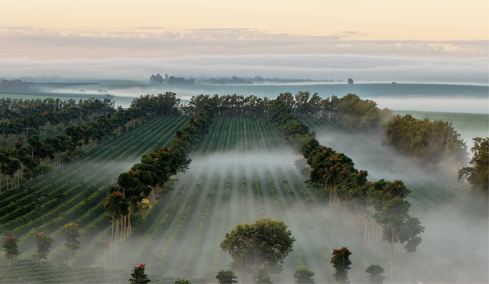
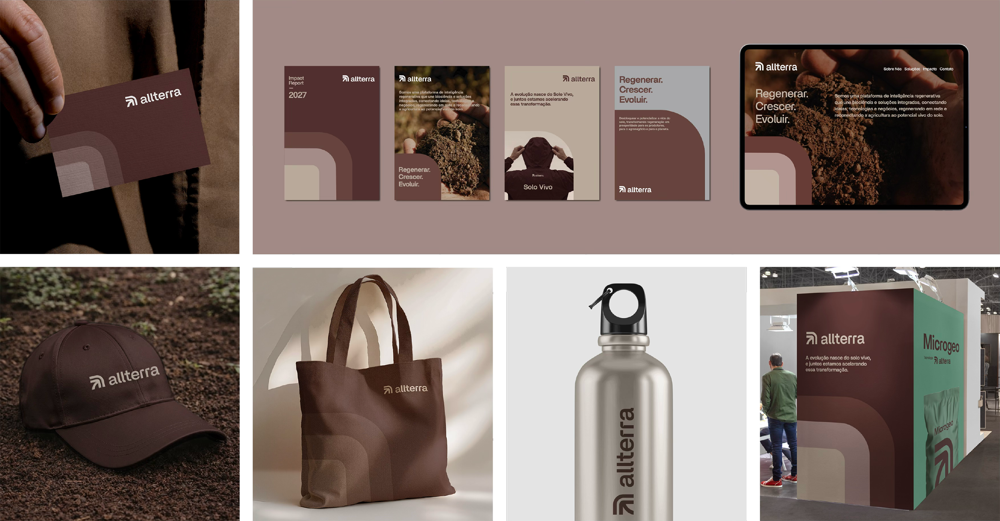
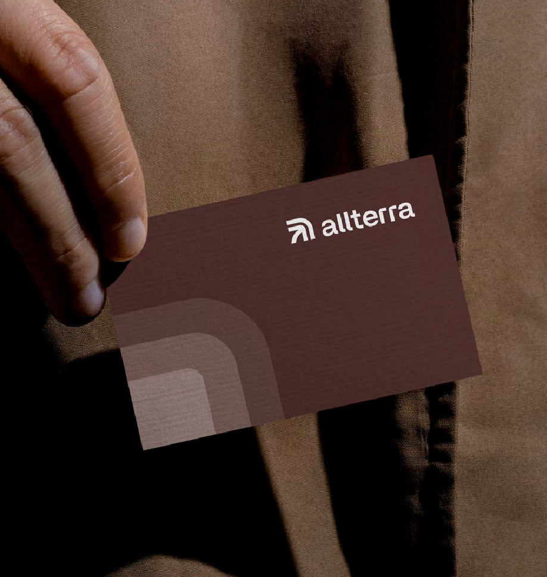
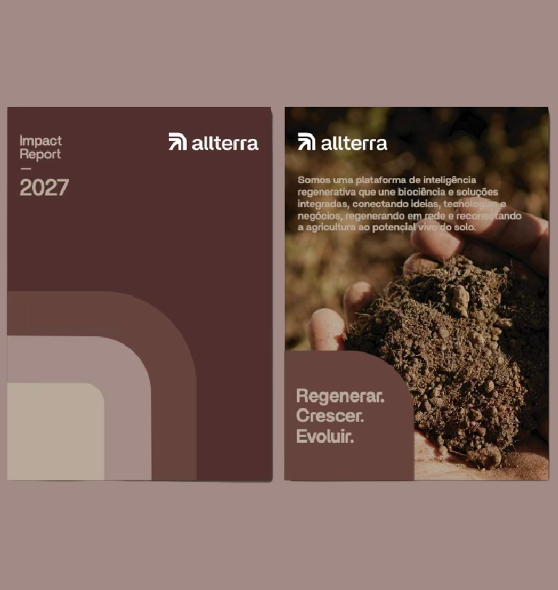
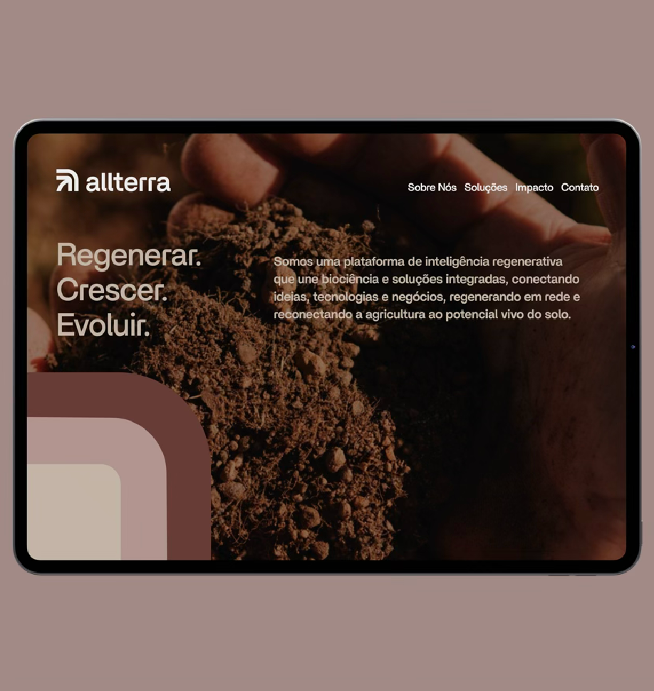
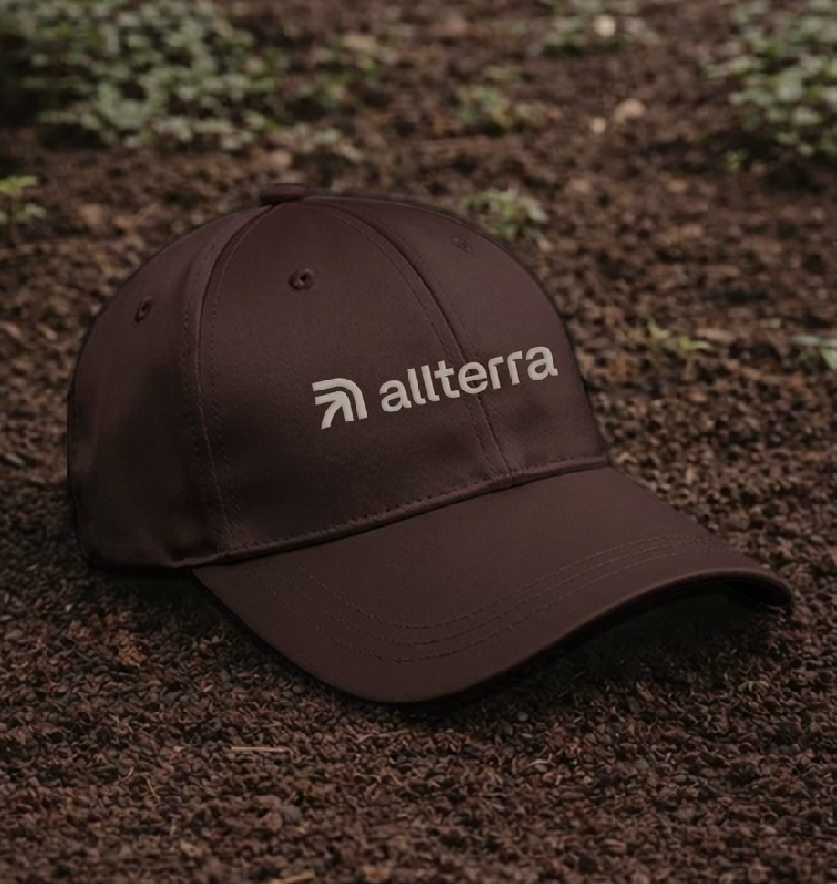
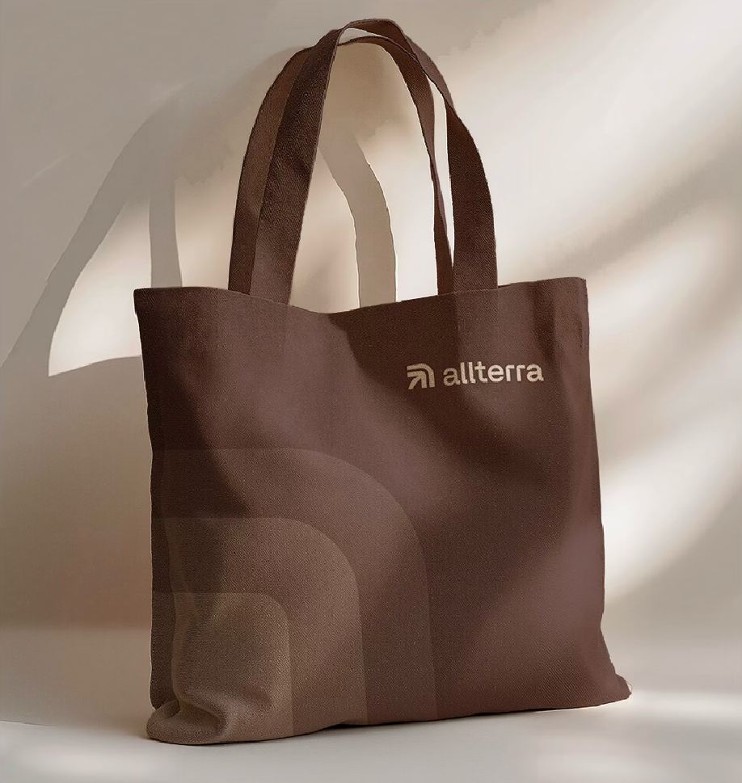
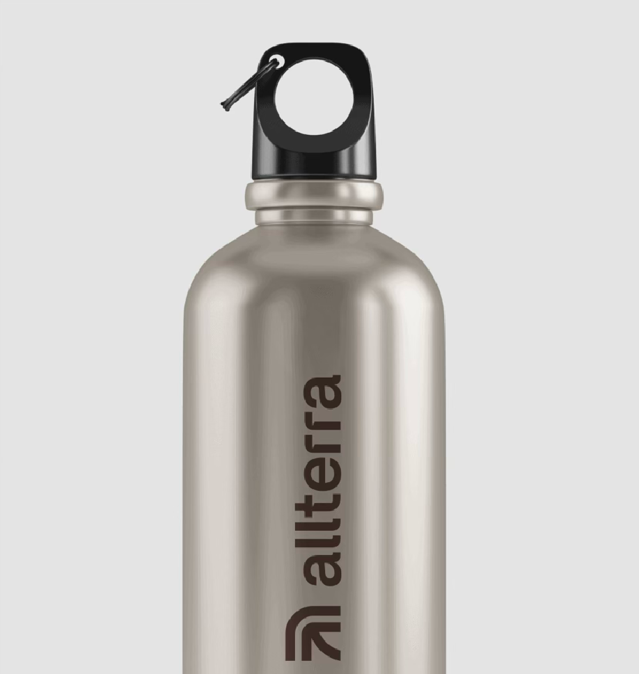
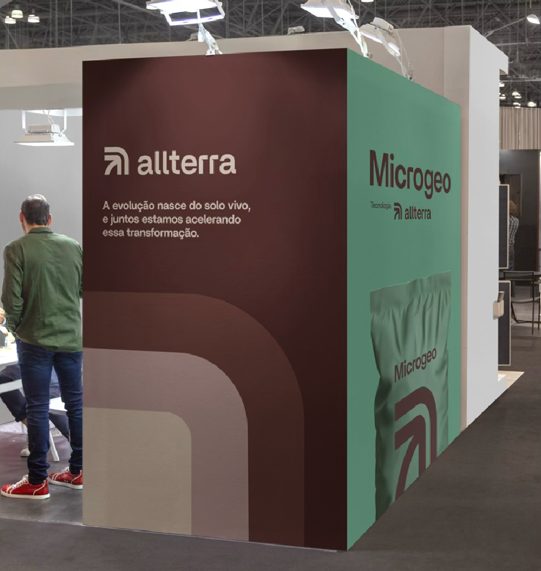

O agronegócio vive sua maior transformação: crescer regenerando
é o seu novo paradigma.
Acreditamos que o solo é o ativo mais poderoso e menos compreendido
da agricultura hoje, e que
o futuro da agricultura não será definido apenas
pela produtividade, mas principalmente pela
capacidade do agronegócio
de se reconectar e ativar o potencial do universo vivo do
solo
como catalisador de inovação e geração de valor.
Na Allterra, abrimos esse caminho e exploramos possibilidades para
desbloquear e potencializar
a vida do solo, reconectando a agricultura
ao seu potencial vivo e transformando regeneração
em prosperidade
para os produtores, o agronegócio e o planeta.
Essa visão, naturalmente sustentável, é parte fundamental da
nossa cultura, guiando nossas
relações, soluções e o impacto
para os negócios e para o nosso ecossistema de valor.
O agronegócio vive sua maior transformação:
crescer regenerando é o seu novo paradigma.
Acreditamos que o solo é o ativo
mais poderoso e menos compreendido
da agricultura hoje, e que o futuro da
agricultura não será definido apenas
pela produtividade, mas principalmente
pela capacidade do agronegócio
de se reconectar e ativar o potencialdo
universo vivo do solo como catalisado
de inovação e geração de valor.
Na Allterra, abrimos esse
caminho e exploramos possibilidades
para desbloquear e potencializar a vida do
solo, reconectando a agricultura ao seu
potencial vivo e transformando regeneração
em prosperidade para os produtores, o
agronegócio e o planeta.
Essa visão, naturalmente sustentável,
é parte fundamental da nossa cultura,
guiando nossas relações, soluções e o
impacto para os negócios e para
o nosso ecossistema de valor.
Somos uma plataforma de inteligência regenerativa. Unimos biociência e soluções
integradas, conectando ideias, tecnologias e negócios, regenerando em rede e
reconectando a
agricultura ao potencial vivo do solo.
A Allterra é uma empresa do portfólio de fundos geridos pelo Pátria, nascida da
fusão
entre a Microgeo e a TMF Fertilizantes, incorporando suas tecnologias
regenerativas em
uma visão
integrada e em um portfólio único de soluções.
Somos uma plataforma de inteligência
regenerativa. Unimos biociência e soluções
integradas, conectando ideias, tecnologias
e negócios, regenerando em rede e
reconectando a agricultura ao
potencial vivo do solo.
A Allterra é uma empresa do portfólio
de fundos geridos pelo Pátria, nascida da
fusão entre a Microgeo e a TMF Fertilizantes,
incorporando suas tecnologias regenerativas
em uma visão integrada e em um portfólio
único de soluções.
Existimos para desbloquear o que o solo
sempre foi capaz de fazer: catalisar evolução,
geração de valor e regeneração.
Juntos, estamos
impulsionando o futuro de uma agricultura mais
inteligente,
próspera e sustentável.
Este é o nosso compromisso, a razão pela qual
existimos e o impacto que queremos
gerar.
Existimos para desbloquear o que o
solo sempre foi capaz de fazer: catalisar
evolução, geração de valor e regeneração.
Juntos, estamos impulsionando o futuro
de uma agricultura mais inteligente,
próspera e sustentável.
Este é o nosso compromisso,
a razão pela qual existimos e o
impacto que queremos gerar.

Cinco princípios orientam como
pensamos e agimos todos os dias.
Transformamos o solo vivo em
catalisador de inovação e valor.
Inteligência do solo, biociência e
tecnologia em sinergia natural.
Crescemos em rede, conectados
por propósito, acelerando a evolução.
Está em nossa essência, permeia
relações, soluções e impacto.
Cinco princípios orientam como
pensamos e agimos todos os dias.
Transformamos o solo vivo em
catalisador de inovação e valor.
Inteligência do solo, biociência e
tecnologia em sinergia natural.
Provar com ciência, vender com
paixão, gerar resultados tangíveis.
Crescemos em rede, conectados
por propósito, acelerando a evolução.
Está em nossa essência, permeia
relações, soluções e impacto.
A Allterra evoluiu. Uma nova ambição exigiu uma nova
expressão, capaz de comunicar
quem nos tornamos
e o que pretendemos liderar.
Não apenas uma mudança estética, mas a expressão visual
de uma mudança de postura e do compromisso de acelerar a
transformação da
agricultura, não apenas acompanhá-la.
Nossa nova identidade parte de uma convicção simples:
se o Solo Vivo é o ativo mais poderoso e ainda pouco
compreendido da agricultura hoje, a
marca Allterra
precisa carregar essa mesma profundidade, vida
e capacidade de revelar o potencial que não se vê.
A Allterra evoluiu. Uma nova ambição
exigiu uma nova expressão, capaz de
comunicar quem nos tornamos
e o que pretendemos liderar.
Não apenas uma mudança estética,
mas a expressão visual de uma mudança
de postura e do compromisso de acelerar a
transformação da agricultura, não apenas
acompanhá-la.
Nossa nova identidade parte de uma
convicção simples: se o Solo Vivo é o ativo
mais poderoso e ainda pouco compreendido
da agricultura hoje, a marca Allterra precisa
carregar essa mesma profundidade, vida
e capacidade de revelar o potencial
que não se vê.








Allterra é uma empresa do portfólio de fundos geridos pelo Pátria, que nasceu da fusão entre a Microgeo e a TMF Fertilizantes, incorporando suas tecnologias regenerativas a uma visão e a um portfólio únicos de soluções integradas. Allterra opera como uma plataforma de inteligência regenerativa, unindo biociência, tecnologia e colaboração para reconectar a agricultura ao potencial vivo do solo.
Porque o agro está se transformando e a Allterra quer liderar
essa mudança, não apenas acompanhá-la.
A nova estratégia formaliza
nossa ambição e o nosso compromisso com o futuro de uma agricultura mais
inteligente e próspera. A fusão entre Microgeo e TMF Fertilizantes criou uma
plataforma com escala, profundidade científica e um portfólio de tecnologias
integradas.
Está na forma como entendemos e ativamos o solo, não como um insumo de resultados imediatos, mas como um ecossistema vivo a ser decodificado, potencializado e monetizado. É a base da nossa inteligência regenerativa e o ponto de partida de todas as nossas soluções e relações.
É a capacidade de decodificar o potencial vivo do solo e transformá-lo em valor real. A combinação de análise profunda, dados reais, biociência aplicada e tecnologia integrada, operando em sinergia, em um ciclo completo de diagnóstico, prescrição, implementação, monitoramento e monetização.
Produtores passam a ter acesso a uma plataforma integrada,
do
diagnóstico profundo do solo à geração de valor: créditos ambientais,
certificações premium e acesso a mercados estratégicos. Não soluções
isoladas. Um ecossistema completo que comprova com ciência e gera resultados
tangíveis.
Parceiros prosperam em um ecossistema vivo de inovação compartilhada, onde cada solução potencializa a próxima. Investidores têm acesso a uma plataforma com um modelo de crescimento claro, inteligência proprietária, soluções integradas, colaboração estratégica e aquisições focadas em solo, gerando valor com transparência e impacto mensurável.
Na Allterra, sustentabilidade é consequência natural do que
fazemos e como atuamos, não uma bandeira.
Quando você ativa o
potencial vivo do solo, produtividade e regeneração se reforçam mutuamente.
É o que chamamos de naturalmente sustentável: está na nossa essência,
permeia relações, soluções e impacto.
Reconectar a agricultura ao potencial vivo do solo para ser autoridade em inteligência regenerativa. Liderar e fortalecer a categoria Solo Vivo como novo código da agricultura moderna. Tornar-se a principal plataforma de inteligência regenerativa da América Latina, crescendo em rede, por colaboração estratégica e aquisições focadas em solo.
Para visualizar este site, gire o celular para a posição vertical.